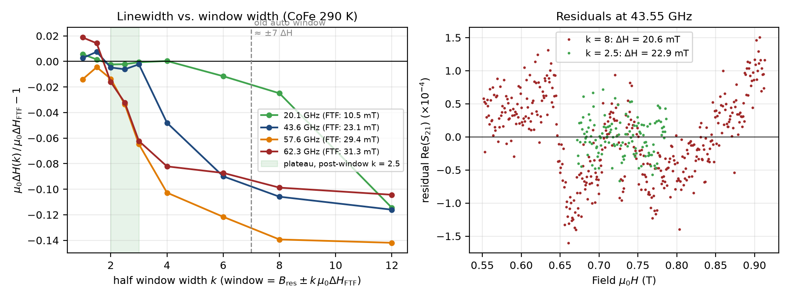

Pipeline¶
fenster = auto_fenster_alle(ds, gamma, breite_faktor) # phase 1: window per frequency
for i, ls in enumerate(ds.linescans): # phase 2: per frequency
ergebnis, beschnitten, verwendet = fitte_mit_nachfenster(
ls, fenster[i], gamma, alpha_max=alpha_max, nachfenster_faktor=2.5)
# 1. fit on detection window -> 2. fit on B_res ± 2.5·ΔH (kept only if unproblematic)
| Post-window rule | Value |
|---|---|
| window | B_res ± k·µ0ΔH (default 2.5; 0 = off), never widened |
| minimum | ≥ 12 points, half-width ≥ 6 field steps |
| accepted | only if 2nd fit succeeds and is unproblematic |
| reason | on ±7 ΔH the linear background does not fit → ΔH 5–15 % too small (benchmark) |

StapelErgebnis: fenster, zugeschnitten, ergebnisse, ausschlusszonen, ausreisser, ausreisser_moden, nebenmoden (modes ≥ 2), alpha_plausibel, nachfit_bestaetigen; ergebnisse_mode(k), moden_vorhanden(), index_problematisch(), index_gefittet(), problem_statistik(), ergebnisse_aktiv(), bewerte(i, art).
Single refit: fitte_neu(stapel, index, feld_unten, feld_oben, startwerte, B_res_vorgabe, bestaetigen, mode); per mode in corridor: fitte_mode(stapel, index, korridor); all frequencies: fitte_korridor(stapel, korridor, schritt). Without Auto-Fit: leerer_stapel(ds).